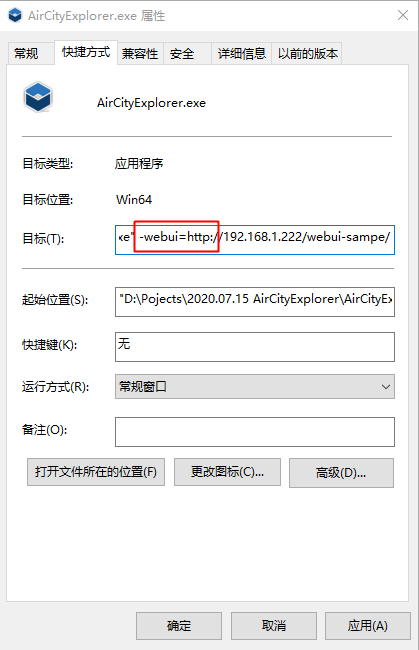
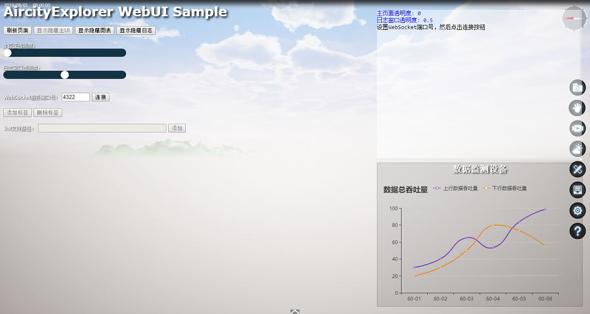
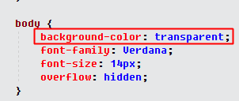
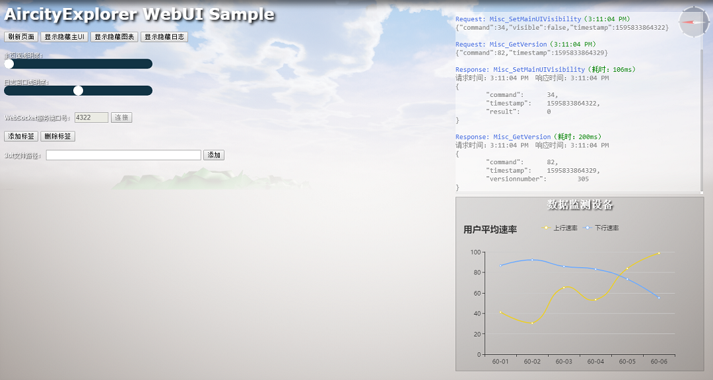
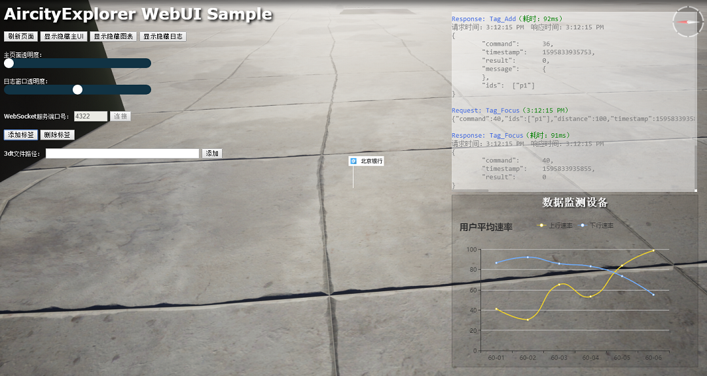
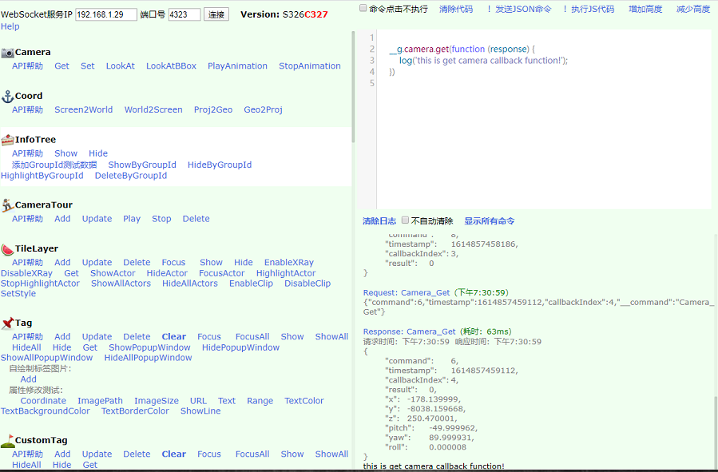
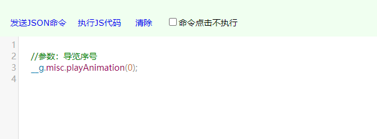

Aircity Explorer 二次开发指南
注意：标准版Explorer不支持二次开发，仅专业版Explorer支持二次开发
启动参数设置
Explorer安装之后，有两个文件夹：Explorer和Engine，
在Explorer\Binaries\Win64文件夹下找到Explorer.exe，点击鼠标右键，选择“创建快捷方式”，然后修改新创建的快捷方式的属性，在目标后面添加启动参数，目前支持以下启动参数：
-
-projectpath
配置程序启动时自动加载的项目文件，例如：
-projectpath=d:/data/acp/111.acp -
-WindowWidth -WindowHeight
配置程序主窗口的宽高，例如：
-WindowWidth=1440 -WindowHeight=768 -
-websocketport
配置Explorer提供WebSocket服务的端口号，例如：
-websocketport=4322 -
-webui
配置Explorer启动时加载的HTML页面，详细介绍参考下面的“使用WebUI”。
使用WebUI
按照上面的启动参数配置方法，在目标后面添加一个启动参数：
-webui=http://192.168.1.222/webui-sampe/
webui可以设置网络路径，也可以是本地路径，需要注意的是本地路径里不能有空格，例如：
-webui=D:\SDK\webui-sample\index.html

设置完成之后，双击快捷方式，就可以启动，在界面上显示出HTML页面。

在使用WebUI的时候，有一下几点需要注意的地方：
- 页面body的样式要设置成透明：
..
transparent是全透明，也可以设置成半透明：background-color: rgba(255,255,255,0.18); 注意：alpha的值要小于0.2（0-0.19之间），如果大于等于0.2，虽然也可以半透明，但是三维无法交互了，鼠标事件会被浏览器接管 - WebUI的页面没有限制，可以跟正常页面一样设计制作，也可以使用全部的JS功能，唯一需要注意的地方就是在需要透明地方设置一下style的background-color的透明度。
调用接口
可以在页面的JS代码中通过WebSocket调用Explorer提供的API。在调用之前，需要先设置一个启动参数：-websocketport=4322，设置一下WebSocket服务的端口号。设置完成以后，双击快捷方式启动。
WebUI Sample启动后，在页面上设置好WebSocket服务的端口号，然后点击“连接”按钮，即可连接到Explorer的WebSocket服务，进行接口调用了

我们以添加一个标签举例，在页面中添加一个button:
<button onclick="addTag()">添加标签</button>
然后实现addTag函数：
function addTag() {
//设置参数
var id = 'p1'; //标签的ID，字符串值，也可以用数字（内部会自动转成字符串）
var coord = [-178.14, -8038.16, 5.47]; //坐标值：标签添加的位置
var imagePath = 'https://ss0.bdstatic.com/70cFvHSh_Q1YnxGkpoWK1HF6hhy/it/u=1816424559,1043488893&fm=26&gp=0.jpg'; //图片路径，可以是本地路径，也支持网络路径
var imageSize = [28, 28]; //图片的尺寸
var text = '北京银行'; //标签显示的文字
var range = [1, 3000.0]; //标签的可见范围
var showLine = true; //标签下方是否显示垂直牵引线
var o = new TagData(id, coord, imagePath, imageSize, url, text, range, showLine);
o.textColor = Color.Black; //设置文字颜色
o.textBackgroundColor = Color.White;
fdapi.tag.add(o, () => {
fdapi.tag.focus('p1', 100);
});
}
程序启动后，点击“添加标签“，可以看到三维场景会自动飞到标签添加的位置

我们再以添加3dt图层举例，在页面中设置好文件的路径，然后点击“添加”按钮，可以看到三维场景自动飞到3dt场景所在的位置了，添加3dt文件的代码如下：
function addTileLayer() {
if (!text3dtFile.value || text3dtFile.value == '') {
logWithColor('red', '请先设置3dt文件的路径');
return;
}
let location = [0, 0, 0];
let rotation = [0, 0, 0];
let scale = [1, 1, 1];
let fileName = text3dtFile.value;
let o = new TileLayerData('1', fileName, location, rotation, scale);
fdapi.tileLayer.add(o, () => {
fdapi.tileLayer.focus('1');
});
}
接口测试页
SDK文件夹下有一个完整的接口测试页面：int.html，里面包含了Explorer提供的所有接口测试代码。启动Explorer后，双击int.html，即可看到页面效果：

左侧是所有接口列表，右边是实时日志输出，左边下面有一个JS代码编辑区域，可以实时编辑JS代码，然后运行看到效果

API开发帮助
详细的API开发文档，请点击最上面的Classes查看